Veg Starters
Paneer Tikka

Marinated paneer cubes grilled to perfection with spices.
Pakora
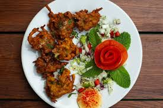Deep-fried fritters made with gram flour and assorted vegetables.
Samosa

Crispy pastry filled with spicy potato and peas mixture.
Dahi Puri

Mini crispy puris filled with yogurt, chutneys, and spices.
Non-Veg Starters
Tandoori Chicken
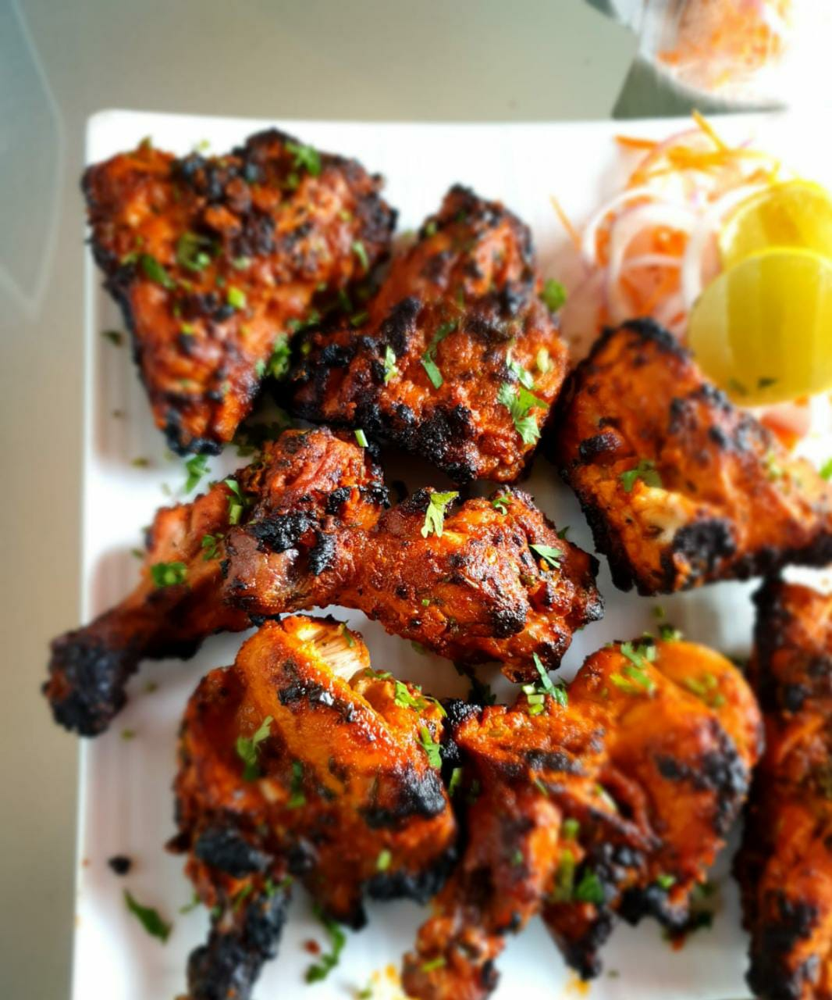Chicken marinated with yogurt and spices, cooked in a clay oven.
Mutton Seekh Kebab

Minced mutton mixed with spices and grilled on skewers.
Fish Amritsari

Batter-fried fish marinated with spices, a specialty from Punjab.
Main Course
Hyderabadi Biryani

A distinct style of biryani from the city of Hyderabad, known for its unique method of cooking marinated meat and rice together, resulting in a flavorful and aromatic dish.
Dosa

A thin, crispy pancake made from fermented rice and urad dal (black gram) batter. Originating from South India, it's often served with sambar (a lentil-based vegetable stew) and coconut chutney.
Butter Chicken (Murgh Makhani)

A beloved North Indian dish where grilled chicken pieces are simmered in a creamy tomato-based sauce, enriched with butter and a blend of spices. It's best paired with naan or steamed rice.
Chole Bhature

A Punjabi delicacy consisting of spicy chickpea curry (chole) served with deep-fried leavened bread (bhature). It's a popular choice for breakfast or brunch.
Desserts
Gulab Jamun

Deep-fried milk-solid dumplings soaked in sugar syrup flavored with cardamom and rose water.
Jalebi
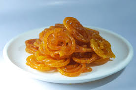Crispy, spiral-shaped sweet soaked in saffron-flavored sugar syrup.
Barfi
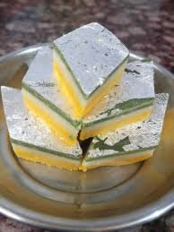A dense milk-based sweet, often flavored with cardamom, coconut, pistachio, or chocolate.
Chinese Cuisine
Starters
Honey Chilli Potatoes

Crispy potato fingers tossed in a sweet and spicy sauce.
Spring Rolls
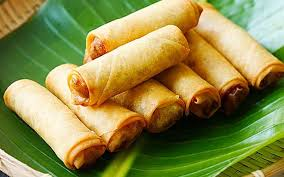Crispy rolls filled with vegetables or meat.
Dumplings (Jiaozi)

Steamed, fried, or boiled; filled with pork, chicken, shrimp, or veggies.
Main Course
Fried Rice

Classic egg fried rice, chicken fried rice, or schezwan style for a spicy kick.
Kung Pao Chicken

Spicy stir-fried chicken with peanuts, veggies, and chilies.
Mapo Tofu

Soft tofu in a spicy, numbing Sichuan sauce (can be made veg or with pork).
Manchurian (Veg/Chicken)

Deep-fried balls or pieces in a thick, spicy soy sauce gravy.
Desserts
Sweet Red Bean Buns

Steamed buns with mildly sweet red bean filling.
Egg Tarts (Dan Tat)

Cantonese take on Portuguese pastéis de nata. Flaky crust with a rich egg custard center.
Mango Sago

Creamy mango puree with tapioca pearls and coconut milk. Super refreshing.
Italian Cuisine
Starters
Caprese Salad
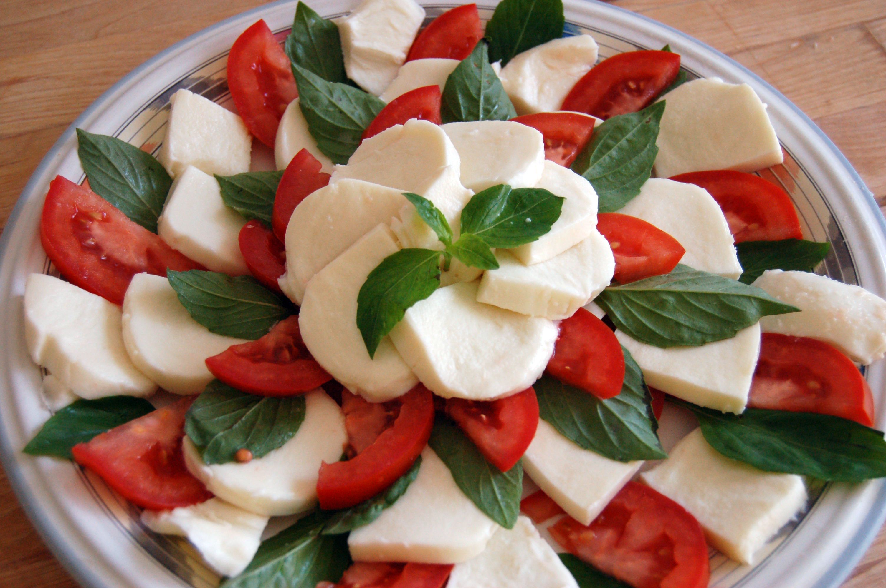Slices of fresh mozzarella, tomatoes, and basil, drizzled with olive oil and balsamic glaze.
Burrata with Cherry Tomatoes
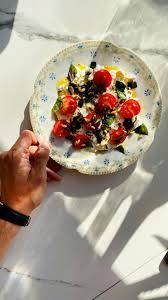Creamy burrata served with a drizzle of olive oil and balsamic, maybe some arugula or pesto.
Shrimp Scampi
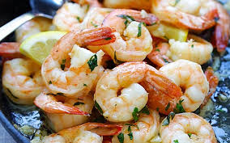Garlic butter shrimp served with toasted bread or on skewers.
Main Course
Spaghetti Carbonara

Creamy pasta made with eggs, pancetta, Pecorino Romano, and black pepper (no cream!).
Chicken Parmigiana

Breaded chicken breast with marinara and melted mozzarella—often paired with pasta or salad.
Linguine alle Vongole
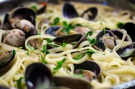Pasta with clams, garlic, olive oil, and white wine—light and coastal.
Mushroom Risotto
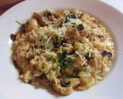Creamy arborio rice with earthy mushrooms and a touch of white wine.
Desserts
Panna Cotta

Silky cooked cream dessert, often served with berry compote or caramel.
Lemon Ricotta Cake
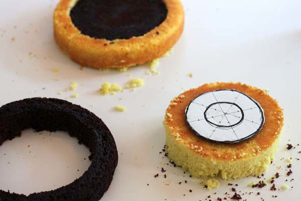Light and fluffy, with a zesty lemon flavor and creamy texture.
Ricotta Pie

Creamy ricotta filling in a pastry crust, sometimes with chocolate chips or candied fruit.